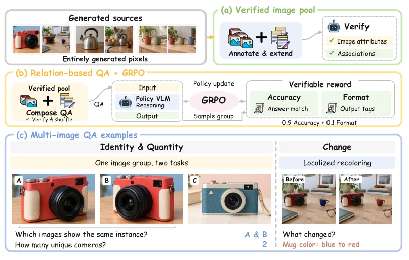
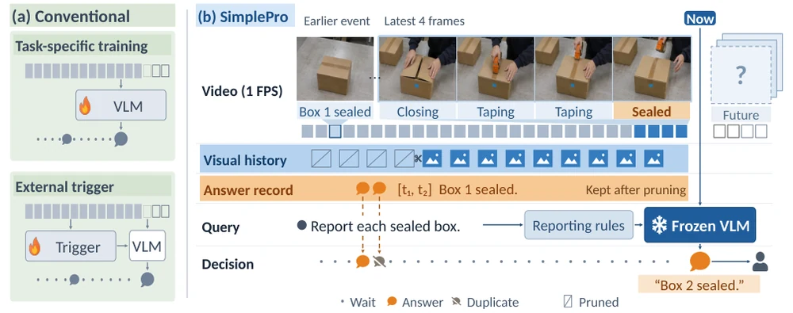
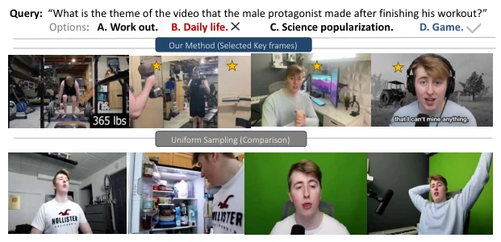
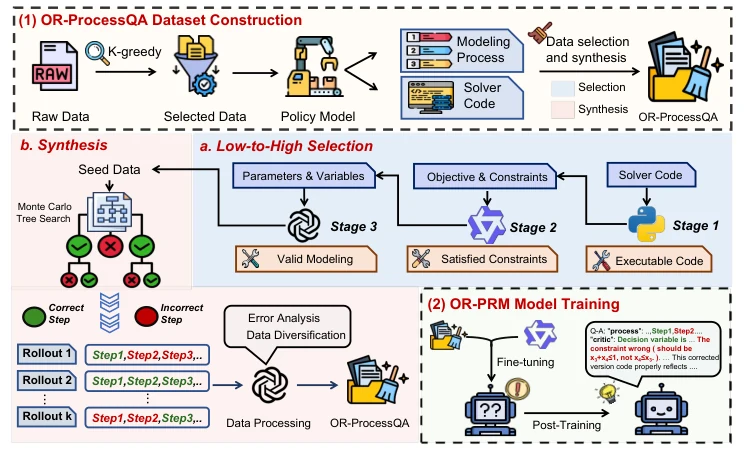
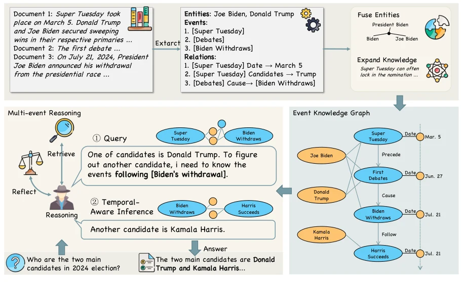

About me
I am a master’s student in Big Data Technology and Engineering at Zhejiang University. I received my bachelor’s degree from Central South University and previously worked as a remote research intern at Microsoft GenAI.
My research focuses on video understanding and data-centric AI.
News
- SPIRAL received an Outstanding Paper Award at ACM Multimedia 2026.
- ReSynth and SimplePro are on arXiv.
- Efficient Frame Selection appeared in Findings of EMNLP 2026.
- OR-PRM appeared at ICLR 2026.
- TextGround4M was accepted to AAAI 2026.
- EventRAG appeared at ACL 2025.
Selected Publications




Efficient Frame Selection for Long Videos at Test Time with Attention-Based MLLM Selectors




EventRAG: Enhancing LLM Generation with Event Knowledge Graphs
* Equal contribution.
Experience
-
Ant Group, Hangzhou
Nov 2026–Present
Ant Star Talent Program
-
TikTok, Shanghai
Jun–Nov 2026
Multimodal Applications Intern
-

Shopee, Shanghai
Nov 2025–May 2026
Multimodal Foundation Models Intern
-
Microsoft GenAI, Remote
Apr–Nov 2025
Multimodal Research Intern
Education
-

Zhejiang University
Sep 2024–Present
Master’s in Big Data Technology and Engineering
-

Central South University
Sep 2020–Jun 2024
Bachelor’s in Information Management and Information Systems